0 · Before you start
Checklist items 1–8 · the marks you can lose before touching the patient
Introduction — checklist items 1–6
- Introduces self to patient.
- Identifies the patient with 2 patient identifiers (name, date of birth).
- Explains purpose of examination.
- Student verbalizes they would ensure proper lighting.
- Student verbalizes and/or demonstrates washing of the hands prior to examination.
- Requests patient to disrobe prior to examination (shirt, shoes, socks).
Two further items are scored once, at the start, and cover the entire examination:
Item 7 — Inspection. Verbalise an introductory phrase before or during the examination, such as: “For every joint, I will be inspecting for symmetry, signs of inflammation, deformities or malalignment of bones, conditions of surrounding tissues, bony landmarks, and ease of range of motion.”
Item 8 — Palpation. “For every joint, I will be palpating for clicking, popping, tenderness, symmetry, signs of inflammation, deformities or malalignment of bones, conditions of surrounding tissues and muscles, and ease of range of motion.”
How to read the panels
Each region below shows the checklist items it covers, a photograph with every landmark numbered in the order the checksheet lists them, a short note on what your fingers should actually be doing, and the range-of-motion movements required for that joint. Numbers on the photograph match the numbered key beside it.
1 · Temporomandibular Joint & Cervical Spine
Checklist items 9–19 · Prof. Chand Shah, MPAS, PA-C
Checklist items covered
- Inspects the temporomandibular joint (sitting or standing).
- Palpates the temporomandibular joint during range of motion.
- Inspects the cervical spine, paravertebral muscles, trapezius muscle, shoulder posture, and scapular position from the posterior and the lateral sides, with the patient standing.
- Palpates the cervical spine, paravertebral muscles, trapezius muscle and spinous processes from the posterior.
1.1 · Palpation landmarks
Temporomandibular joint
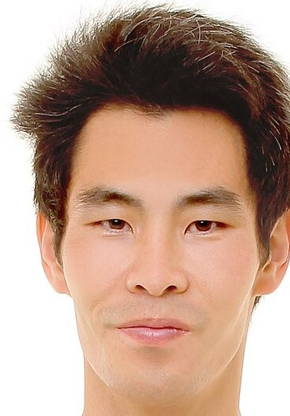
- Temporomandibular joint — Immediately anterior to the tragus of the ear. Rest your finger pads there and have the patient open and close — you should feel the mandibular condyle glide forward under your fingers.
The temporomandibular joint sits immediately anterior to the tragus. Both sides are marked — palpate them at the same time so you can feel asymmetry, clicking, or crepitus as the jaw moves.
Cervical spine
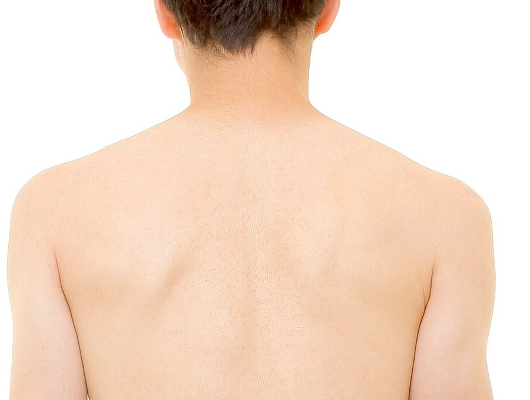
- Cervical spinous processes — The midline bony bumps down the back of the neck.
- C7 (vertebra prominens) — The most prominent spinous process at the base of the neck — use it to count levels.
- Cervical paravertebral muscles — The muscle columns immediately lateral to the spinous processes, roughly 1–2 cm off the midline.
- Trapezius (upper fibres) — The broad sheet of muscle sloping from the neck out to the acromion.
Work down the midline first, then step laterally. C7 is the most prominent spinous process at the base of the neck and is the anchor for counting levels.
1.2 · Range of motion
| Joint | Movements the checklist requires |
|---|---|
| Cervical spine | Flexion · hyperextension · lateral bending right and left · rotation right and left |
2 · Thoracic & Lumbar Spine
Checklist items 20–26 · Prof. Chand Shah, MPAS, PA-C
Checklist items covered
- Inspects the pelvis from posterior and right or left side for symmetry in the level of the iliac crest and posterior superior iliac spines, with the patient standing.
- Inspects the thoracic and lumbar spine from the posterior and right or left side.
- Palpates the thoracic and lumbar spinous processes, paraspinal muscles, and lumbosacral junction from the posterior.
2.1 · Palpation landmarks
Thoracic and lumbar spine
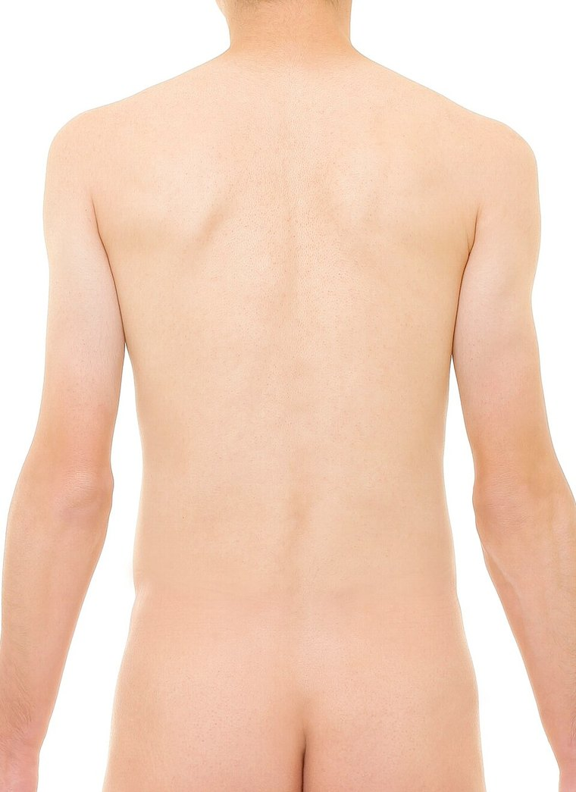
- Thoracic spinous processes — Midline bony points through the upper and mid back.
- Lumbar spinous processes — Continue down the midline through the lower back.
- Paraspinal muscles — The vertical muscle columns either side of the spine — compare tone, tightness and tenderness left against right.
- Lumbosacral junction — The midline transition at the base of the lumbar spine, just above the sacrum.
Palpate directly over the spinous processes down the midline, then move laterally onto the paraspinal muscles and compare left with right at the same level before finishing at the lumbosacral junction.
2.2 · Range of motion
| Joint | Movements the checklist requires |
|---|---|
| Thoracic and lumbar spine | Flexion · hyperextension · lateral bending right and left · rotation right and left |
3 · Shoulder
Checklist items 27–39 · Prof. Chand Shah, MPAS, PA-C
Checklist items covered
- Inspects the shoulders, bilaterally (standing or sitting).
- Locates and palpates the sternoclavicular joint, bilaterally.
- Locates and palpates the clavicle, bilaterally.
- Locates and palpates the acromioclavicular joint, bilaterally.
- Locates and palpates the coracoid process, bilaterally.
- Locates and palpates the greater tubercle of the humerus, bilaterally.
- Locates and palpates the bicipital groove and tendon, bilaterally.
3.1 · Palpation landmarks
Shoulder landmarks
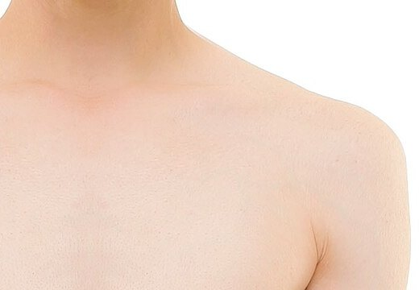
- Sternoclavicular joint — The medial end of the clavicle where it meets the manubrium, just lateral to the suprasternal notch.
- Clavicle — Trace the whole bone from the sternoclavicular joint laterally.
- Acromioclavicular joint — The small step or depression where the lateral clavicle meets the acromion.
- Coracoid process — A deep, firm point roughly 2–3 cm inferior to the lateral clavicle, in the deltopectoral groove. It is tender in most normal people.
- Greater tubercle of the humerus — Just inferior to the anterolateral acromion; it moves under your fingers when you rotate the humerus.
- Bicipital groove and tendon — About halfway between the greater tubercle and the coracoid process; the long head of biceps tendon runs in the groove.
Trace in order: start medially at the sternoclavicular joint, follow the clavicle laterally to the acromioclavicular joint, drop to the coracoid process, move laterally to the greater tubercle, then find the bicipital groove between them.
3.2 · Range of motion
| Joint | Movements the checklist requires |
|---|---|
| Shoulder | Flexion · extension · abduction · adduction · internal rotation · external rotation |
4 · Elbow
Checklist items 40–47 · Prof. Chand Shah, MPAS, PA-C
Checklist items covered
- Inspects the elbow with the elbow in flexion (at 70 degrees) supported by your hand, bilaterally.
- Palpates the elbows, bilaterally.
- Palpates the olecranon processes, medial epicondyles, and lateral epicondyles, bilaterally.
- Palpates the biceps brachii, triceps brachii, and ulnar nerves, bilaterally.
4.1 · Palpation landmarks
The flexed elbow, as you see it
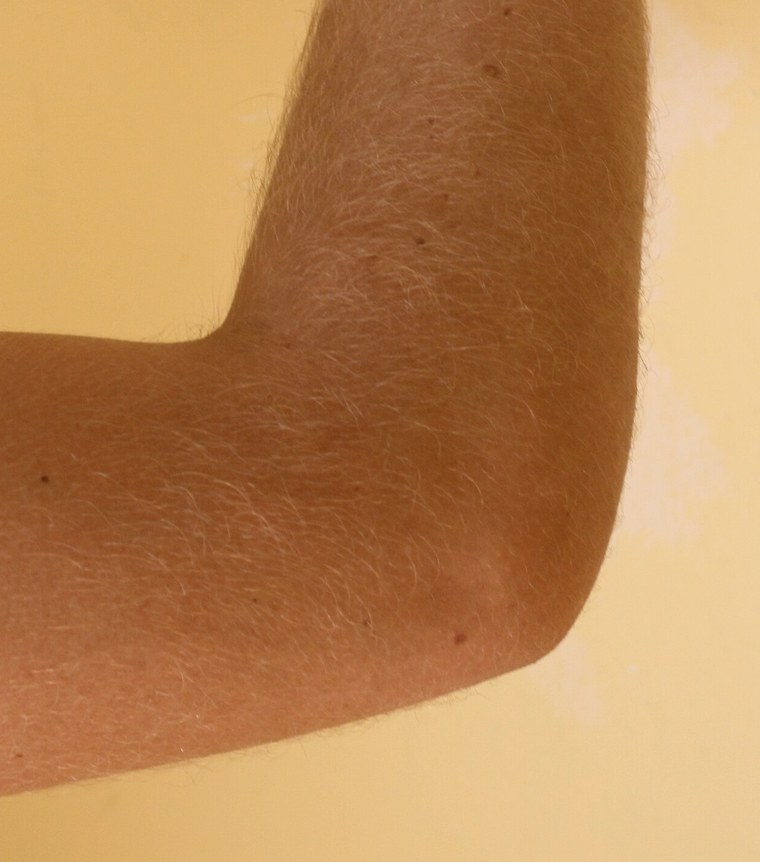
- Olecranon process — The posterior tip of the elbow — the point of the bend.
- Triceps brachii and tendon — Posterior upper arm, inserting onto the olecranon.
This is the position the checklist asks for: elbow flexed to about 70 degrees with the forearm supported by your hand. Inspect the contour first, then palpate.
The three bony points
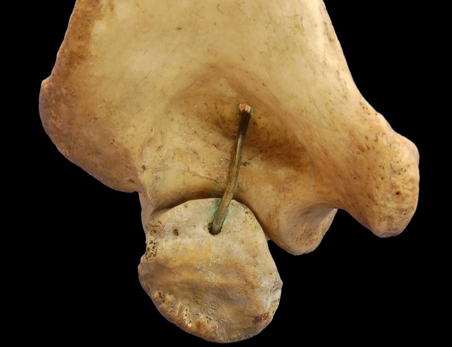
- Olecranon process — Sits in the middle, between the two epicondyles.
- Medial epicondyle — The larger, blunter prominence — on the little-finger side.
- Lateral epicondyle — The smaller, rounder prominence — on the thumb side.
- Ulnar nerve groove — The gap between the medial epicondyle and the olecranon. Palpate very gently; firm pressure here is uncomfortable and adds nothing.
The same three bony points with the soft tissue removed. Note how the ulnar nerve groove sits between the medial epicondyle and the olecranon — that is the gap your finger drops into on a real patient.
4.2 · Range of motion
| Joint | Movements the checklist requires |
|---|---|
| Elbow | Flexion · extension · pronation · supination — pronation and supination with the elbow isolated and flexed to 90 degrees (arm supported at the side or pinned to the waist) |
5 · Wrist, Hand & Fingers
Checklist items 48–64 · Prof. Chand Shah, MPAS, PA-C
Checklist items covered
- Inspects the dorsal and ventral aspects of the wrists, bilaterally.
- Palpates the distal radius, distal ulna, radial styloid, and ulnar styloid, bilaterally.
- Inspects the dorsal and palmar aspect of hands, bilaterally.
- Palpates the carpals, metacarpals, metacarpophalangeal joints, interphalangeal joints, proximal interphalangeal joints, and distal interphalangeal joints on the dorsal and palmar aspects of the hands and fingers, bilaterally.
5.1 · Palpation landmarks
Palmar surface
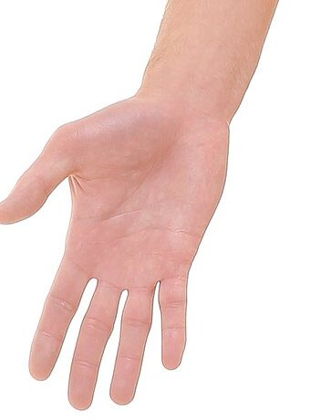
- Radial styloid — The bony point on the thumb side of the wrist.
- Ulnar styloid — The bony point on the little-finger side of the wrist.
- Carpals — The small bones across the wrist and proximal hand.
- Metacarpals — The long bones of the palm.
- Metacarpophalangeal joints — The knuckles at the base of the fingers.
- Proximal interphalangeal joints — The middle finger joints.
- Distal interphalangeal joints — The finger joints nearest the nails.
- Thumb interphalangeal joint — The thumb has only one interphalangeal joint.
The palmar surface is where you feel flexor tendon thickening and the fullness of a joint effusion.
Dorsal surface
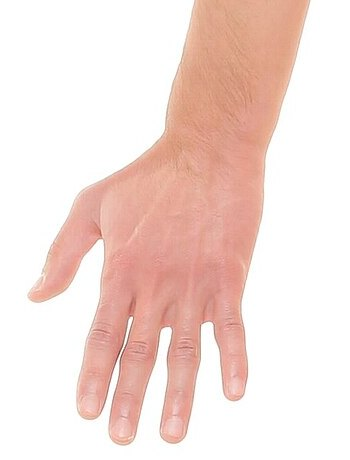
- Radial styloid — Thumb side of the wrist — the same landmark, approached from behind.
- Ulnar styloid — Little-finger side of the wrist; usually the more prominent of the two.
- Carpals — Across the back of the wrist.
- Metacarpals — Easily traced along the dorsum between the extensor tendons.
- Metacarpophalangeal joints — The knuckles.
- Proximal interphalangeal joints — The middle knuckles.
- Distal interphalangeal joints — The knuckles closest to the nails.
- Thumb interphalangeal joint — The single joint of the thumb.
The dorsal surface is where synovial swelling, bogginess and joint step-offs are easiest to appreciate. Examine BOTH surfaces — the checklist requires it.
5.2 · Range of motion
| Joint | Movements the checklist requires |
|---|---|
| Wrist | Flexion · extension · radial deviation · ulnar deviation |
| Fingers | Flexion (make a fist with the thumb across the knuckles) · extension (open the fist) · abduction (spread the fingers) · adduction (bring them back together) |
| Thumb | Flexion (across the palm to the base of the 5th finger) · extension (away from the fingers) · abduction (anteriorly away from the palm, palm up) · adduction (back from abduction) · opposition (thumb tip to 5th finger tip) |
6 · Hip & Pelvis
Checklist items 65–75 · Prof. Chand Shah, MPAS, PA-C
Checklist items covered
- Inspects the anterior hip joint, bilaterally (supine or standing); posterior and lateral completed with the spine exam.
- Palpates the iliac crest, bilaterally.
- Palpates the anterior superior iliac spine, bilaterally.
- Palpates the sacroiliac joints, bilaterally.
- Palpates the greater trochanter, bilaterally.
6.1 · Palpation landmarks
Anterior landmarks
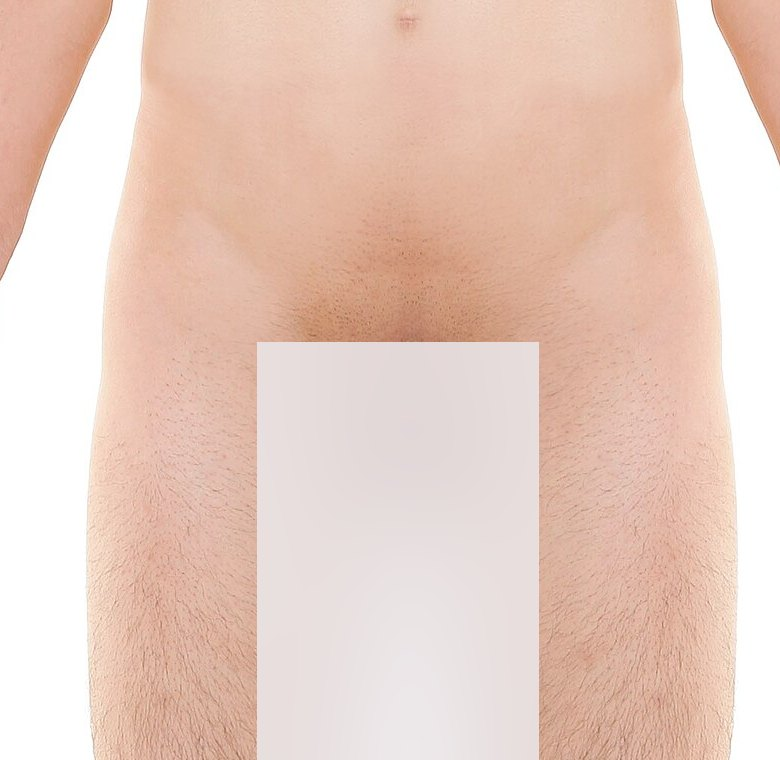
- Iliac crest — The top rim of the pelvis — trace it from anterior to posterior.
- Anterior superior iliac spine — The sharp anterior endpoint of the iliac crest.
- Greater trochanter — The prominent lateral upper-thigh landmark. (Numbered 4 to match the posterior view.)
Set your hands on the iliac crests first — they are the easiest landmark to find and everything else is referenced from them.
Posterior landmarks
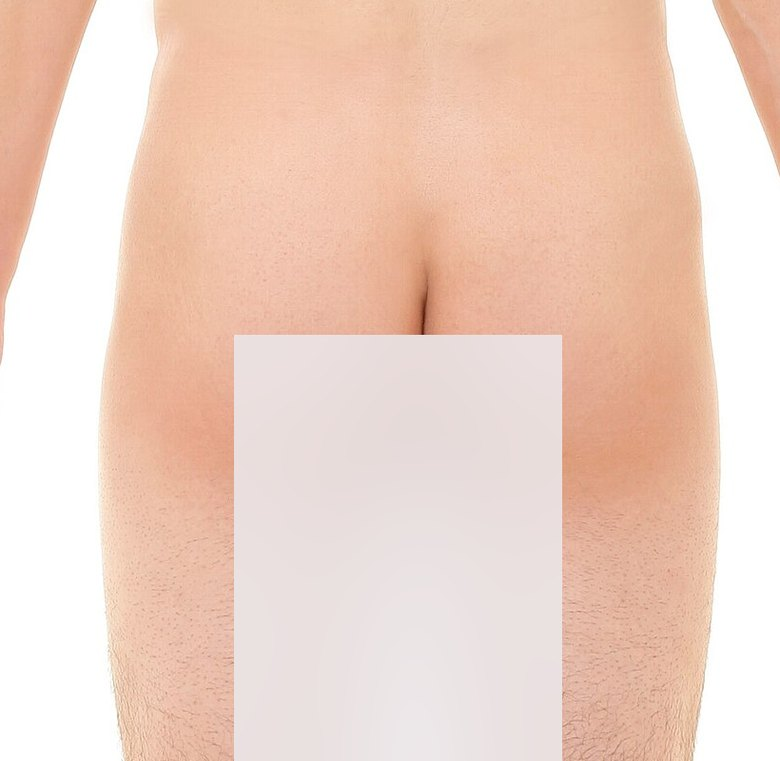
- Iliac crest — The same rim, followed round to the back.
- Sacroiliac joints — Just medial and slightly inferior to the posterior superior iliac spines, beside the sacrum.
- Greater trochanter — Confirm it by resting your fingertips on the lateral upper thigh and gently rotating the hip internally and externally — the trochanter rolls beneath your fingers.
The sacroiliac joints sit just medial and slightly inferior to the posterior superior iliac spines — the dimples you can usually see either side of the sacrum.
6.2 · Range of motion
| Joint | Movements the checklist requires |
|---|---|
| Hip | Flexion (supine preferred) · extension · adduction · abduction · internal rotation · external rotation — internal and external rotation are done supine |
7 · Knee
Checklist items 76–82 · Prof. Chand Shah, MPAS, PA-C
Checklist items covered
- Inspects the knee in flexion and extension, bilaterally (supine or seated).
- Palpates the patella and patellar tendon, bilaterally (with the knee in extension).
- Palpates the medial and lateral condyles, bilaterally (knee flexed or extended).
- Palpates the tibial tuberosity, bilaterally (knee flexed or extended).
- Palpates the medial tibial plateau, lateral tibial plateau, medial joint line, and lateral joint line, bilaterally (with the knee flexed).
7.1 · Palpation landmarks
Knee landmarks
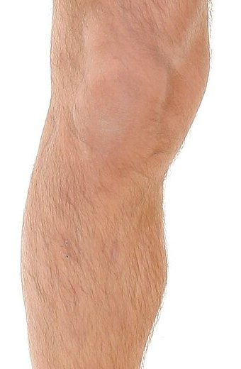
- Patella — Palpate the borders and anterior surface with the knee extended and the quadriceps relaxed.
- Patellar tendon — The band running from the inferior pole of the patella down to the tibial tuberosity.
- Medial and lateral femoral condyles — The bony prominences either side of the patella.
- Tibial tuberosity — The anterior bump on the proximal tibia, below the patellar tendon.
- Medial and lateral tibial plateaus — The top surfaces of the tibia just below the joint line.
- Medial and lateral joint lines — The gap between femur and tibia on each side of the patellar tendon.
Position matters: patella and patellar tendon with the knee EXTENDED; joint lines and tibial plateaus with the knee FLEXED, which opens the spaces and makes them far easier to feel.
7.2 · Range of motion
| Joint | Movements the checklist requires |
|---|---|
| Knee | Flexion (supine, or standing with hip flexion) · extension (supine or seated) |
8 · Ankle, Foot & Toes
Checklist items 83–94 · Prof. Chand Shah, MPAS, PA-C
Checklist items covered
- Inspects the dorsal and ventral aspects of the ankles, bilaterally.
- Inspects the dorsal and plantar aspects of the feet, bilaterally.
- Palpates the anterior talofibular ligament, calcaneofibular ligament, and posterior talofibular ligament of the ankles, bilaterally.
- Palpates the Achilles tendon, bilaterally.
- Palpates the medial and lateral malleoli, bilaterally.
- Palpates the tarsals, tarsometatarsal joints, metatarsals, interphalangeal joints, and metatarsophalangeal joints, bilaterally.
8.1 · Palpation landmarks
Malleoli and the bones of the foot
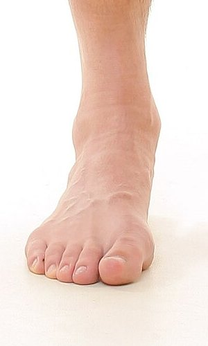
- Medial malleolus — The inner ankle prominence.
- Lateral malleolus — The outer ankle prominence — the anchor for all three lateral ligaments.
- Tarsals — The hindfoot and midfoot bones.
- Tarsometatarsal joints — The joint row across the midfoot.
- Metatarsals — The long bones of the forefoot.
- Metatarsophalangeal joints — The base of the toes — the ball of the foot.
- Toe interphalangeal joints — The toe knuckles; palpate dorsal and plantar surfaces.
Anchor on the two malleoli, then walk distally along the foot: tarsals → tarsometatarsal joints → metatarsals → metatarsophalangeal joints → toe interphalangeal joints.
Achilles tendon and malleoli from behind
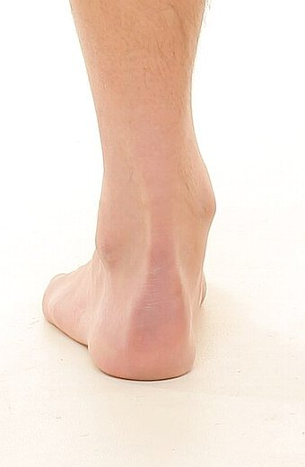
- Medial malleolus — Sits higher and slightly more anterior.
- Lateral malleolus — Sits lower and slightly more posterior.
- Achilles tendon — The thick cord running down the posterior ankle to insert on the calcaneus.
From behind, note that the LATERAL malleolus sits lower (more distal) and further posterior than the medial malleolus — a reliable way to orient yourself before you look for the lateral ligaments.
8.2 · Range of motion
| Joint | Movements the checklist requires |
|---|---|
| Ankle, foot and toes | Dorsiflexion · plantarflexion · inversion · eversion — stabilise the leg for each. Toe flexion and extension — stabilise the ankle. |
9 · Full checklist — all 94 items
The complete MSK lab checksheet in order, for a final run-through
| Item | Task |
|---|